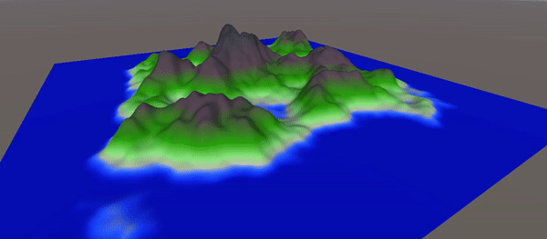

A sailing simulation in Virtual Reality, built in Unity with models and animations made in Blender.

The hardest part was making the waves look and feel right. After a lot of unsatisfying experiments with Perlin noise, I switched to Crest — a royalty-free Unity ocean asset that uses Gerstner waves for far more convincing results.

The procedurally generated islands were another rewarding part of the project.